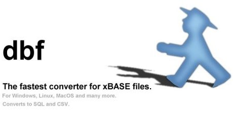

Latest version: libdbf 0.0.1; dbf 0.9.0
dbf is an easy-to-use command line tool to show and convert the content of dBASE III, IV, and 5.0 files. It reads dBASE databases and prints the content to the screen or converts it to comma-separated (*.csv) files which can be opened in Excel, StarOffice, and most other spread sheets. It can also be used to show some statistics about the content.